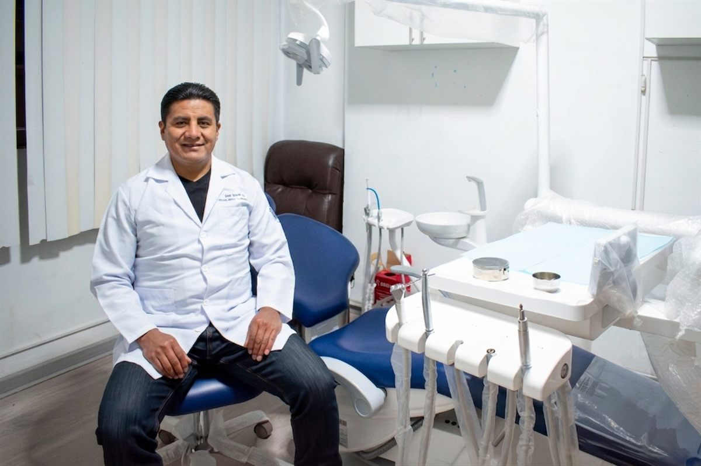

Implantes dentales
Un tornillo de titanio reemplaza la raíz del diente perdido y sostiene la corona nueva. Sirve cuando falta una pieza y no quieres desgastar las vecinas ni usar prótesis removible. Se planifica sobre radiografía.
Juliaca · Puno
Cirujano Dentista · COP N.º 24841
Te explico tu caso con la radiografía en la mano y planificamos juntos el tratamiento.
Cómo trabajo

El doctor
Soy Cirujano Dentista y llevo más de dos décadas atendiendo en Juliaca. Realizo extracción de terceras molares retenidas, cirugía oral, implantes dentales y tratamiento de encías: casos que en otros consultorios terminan en una derivación y que aquí se resuelven.
Yo mismo atiendo cada etapa de tu tratamiento. La consulta es directa y sin apuros: primero te explico qué tienes, después qué opciones existen y qué implica cada una. Recién ahí decidimos juntos.
Mi formación quirúrgica la hice en la Universidad Nacional Mayor de San Marcos, con cuatro años de residencia hospitalaria.
Universidad Nacional Mayor de San Marcos
Lima · Decana de América, fundada en 1551
Egresado de la Segunda Especialidad en Cirugía Bucal y Maxilofacial, con cuatro años de residencia hospitalaria.
Tratamientos
Qué es cada tratamiento, para qué sirve y cuándo hace falta. Si no estás seguro de cuál es tu caso, escríbeme y lo vemos.
Un tornillo de titanio reemplaza la raíz del diente perdido y sostiene la corona nueva. Sirve cuando falta una pieza y no quieres desgastar las vecinas ni usar prótesis removible. Se planifica sobre radiografía.
Las muelas del juicio que no llegaron a salir o salieron torcidas empujan a las demás, se infectan y duelen. Realizo la extracción quirúrgica con anestesia efectiva y un plan claro de recuperación.
Dientes retenidos, restos de raíces, frenillos cortos, quistes y lesiones de la boca. Son intervenciones menores que se resuelven en el mismo consultorio, con diagnóstico previo por imágenes.
Encías que sangran, se retraen o aflojan los dientes: es enfermedad periodontal y avanza sin doler. Se trata limpiando bajo la encía y controlando la infección antes de que se pierda el hueso.
Cuando falta hueso donde debe ir el implante, primero se regenera. Es el paso previo que permite colocar un implante firme en zonas donde el diente se perdió hace mucho tiempo.
Limpiezas, curaciones y controles preventivos para toda la familia, y coronas, puentes y prótesis cuando ya hay piezas dañadas o ausentes que devolver a la función.
Ubicación
Toca el mapa para verlo en grande o pide la ruta desde donde estás.
Escríbeme por WhatsApp, cuéntame qué te pasa y coordinamos el horario que mejor te acomode.
Escribir al +51 928 471 815